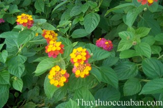

Tên khác:
Tên thường gọi: Bông ổi, Trăng lao, Cây hoa cứt lợn, Trâm ổi, Thơm ổi, Hoa ngũ sắc, Tứ quý, ngũ sắc, hoa cứt lợn, tứ thời, trâm hôi, trâm anh, mã anh đơn, nhá khí mu (Tày)
Tên tiếng Trung: 马缨丹
Tên khoa học: Lantana camara L
Họ khoa học: thuộc họ Cỏ roi ngựa - Verbenaceae
Cây bông ổi
(Mô tả, hình ảnh cây bông ổi, phân bố, thu hái, chế biến, thành phần hóa học, tác dụng dược lý...)

Mô tả cây bông ổi
Cây bông ổi là một cây thuốc nam quý, dạng cây nhỏ, cao tới 1,5m-2m hay hơn. Thân có gai; cành dài, hình vuông, có gai ngắn và lông ráp. Lá mọc đối, khía rạng, mặt dưới có lông. Cụm hoa là những bông co lại thành đầu giả mọc ở nách các lá ở ngọn. Hoa lưỡng tính, không đều, thoạt tiên vàng dợi rồi vàng kim, vàng tươi, sau cùng đỏ chói, ít khi toàn hoa trắng. Quả bạch hình cầu, nằm trong lá dài, khi chín màu đen; nhân gồm 1-2 hạt cứng, xù xì.
Bộ phận dùng làm thuốc
Lá, hoa và rễ - Folium, Flos et Radix Lantanae.
Nơi sống và thu hái:
Cây gốc ở Trung Mỹ, được nhập trồng làm cảnh, nay phổ biến rộng rãi, mọc hoang ở các bãi đất trống, đồi núi, ven bờ biển. Các bộ phận của cây thu hái vào mùa khô, phơi hay sấy khô. Cũng có khi dùng tươi.
Thành phần hoá học:
Lá chứa 0,2% tinh dầu; ở hoa khô chỉ có 0,07%. Tinh dầu có 8% terpen bicyclic và 10-12% L-a-phelandren. Tinh dầu bông ổi Ấn Độ chứa cameren, isocameren và micranen. Trong vỏ có 0,08% lantanin, là một alcaloid. Lá trong thời kỳ có hoa chứa 0,31-0,68% lantanin, còn có lantaden.
Tác dụng dược lý
Đài hoa của cây Bông ổi có tác dụng chống co thắt cơ trơn, làm thư giãn cơ trơn tử cung, làm hạ huyết áp và có tính kháng sinh, trị ho, viêm họng. Kinh nghiệm dân gian là nhai ngậm đài hoa Bông ổi để trị viêm họng, ho. Đài và lá cũng được dùng làm thuốc nhuận gan, lợi tiểu. Dịch chiết nước đài hoa Bông ổi đem tiêm vào mèo thí nghiệm (không gây mê) cho thấy có tác dụng hạ huyết áp. Tác dụng này bị ngăn cản bởi atropin Một chiết đoạn polysaccharit nụ hoaBông ổi tan trong nước có tính chất như pectin polysacharit làm chậm sự phát triển của khối u sarcoma 180 cấy ghép trên chuột. Dầu ép từ hạt Bông ổi và chất không xà phòng hoá có tác dụng kháng sinh trên một số chủng vi khuẩn như Escherichia coli, Salmonella typhi, Bacillus subtilis, Coryne bacterium pyogenes, Staphylococcus aureus… và có tác dụng kháng nấm trên một vài loài nấm: aspergillus, trychophyton, cryptococcus…
Người ta biết lantanin, cũng như quinin, làm giảm sự tuần hoàn và hạ nhiệt.
Vị thuốc bông ổi
Tính vị, tác dụng:
Lá có vị đắng, hôi, tính mát, hơi có độc, có tác dụng hạ sốt, tiêu độc, tiêu sưng.
Hoa có vị ngọt, tính mát, có tác dụng cầm máu.
Rễ có vị dịu, tính mát, có tác dụng hạ sốt, tiêu độc, giảm đau. N
Công dụng, chỉ định và phối hợp:
Rễ thường dùng trị sốt lâu không dứt, quai bị, phong thấp đau xương, chấn thương bầm giáp.
Hoa dùng trị lao với ho ra máu và hạ huyết áp.
Lá dùng ngoài đắp vết thương, vết loét hoặc dùng để cầm máu; cũng dùng trị ghẻ lở, viêm da, các vết chàm và dùng chườm nóng trị Thấp khớp. Thường dùng tươi giã đắp ngoài hay nấu nước để rửa.
Hoa dùng làm thuốc trị ho với liều 12g, dạng thuốc sắc hay hâm nóng hoặc chế xi rô.
Liều dùng
Ứng dụng lâm sàng của vị thuốc bông ổi - cây ngũ sắc
Viêm da, eczema, tinea, mụn nhọt.
Nấu lá tươi để rửa ngoài.
Chấn thương bầm giập, vết thương chảy máu, giã lá tươi đắp ngoài.
Hoặc dùng 30g lá khô, với 10g gừng khô tán bột rắc lên vết thương ngày một lần.
Ho ra máu và lao phổi
Dùng hoa khô 6-10g nấu nước uống
Chữa chứng ho do lạnh:
Lấy hoa ngũ sắc 20g để tươi hoặc 10g phơi khô, sắc với 500ml nước còn 100ml, uống trong ngày. Dùng riêng hoặc phối hợp với hoa hòe sao đen và rễ bạch cập, mỗi thứ 8g. Có thể thêm đường cho dễ uống. Nước sắc này còn chữa cảm sốt, tăng huyết áp. Dùng liền 5 ngày.
Ho ra máu và lao phổi:
Dùng hoa ngũ sắc khô 6 – 10g nấu nước uống.
Chấn thương bầm giập, vết thương chảy máu:
Giã lá bông ổi tươi đắp ngoài. Hoặc dùng 30g lá khô, với 10g gừng khô tán bột rắc lên vết thương ngày một lần.
Thuốc cầm máu, sát khuẩn, chữa vết thương nhỏ hẹp:
Lá và hoa ngũ sắc 30g phối hợp với gừng tươi 10g, phơi hoặc sấy khô, tán nhỏ, rây bột mịn, rắc vào vết thương. Ngày thay băng một lần. Hoặc lá ngũ sắc để tươi, rửa sạch, giã đắp vào vết thương. Nếu vết thương rộng thì sơ cứu xong sau đó đến cơ sở y tế để được cấp cứu
Trị chứng tiêu khát của bệnh đái tháo đường:
Lấy toàn bộ cả cành, lá và hoa cây ngũ sắc phơi khô. Thái khúc cho vào lọ đậy kín. Dùng dần, mỗi ngày lấy khoảng 40g, cho 500ml nước, sắc còn lại 150ml, uống thay trà hàng ngày. Có thể kết hợp ǎn cháo nấu từ củ mài và củ súng thì càng tốt. Dùng liền 10 ngày.
Chữa mẩn ngứa:
Lá và hoa ngũ sắc khoảng 30 – 50g, nấu lấy nước đặc, tắm, ngâm rửa hằng ngày.
Tham khảo
Cây này không có tác dụng chữa viêm xoang như cây cứt lợn Ageratum conyzoides nên cần chú ý tránh dùng nhầm.
Nơi mua bán vị thuốc Bông ổi đạt chất lượng ở đâu?
Trước thực trạng thuốc đông dược kém chất lượng, nguồn gốc không rõ ràng,... xuất hiện tràn lan trên thị trường, làm ảnh hưởng tới hiệu quả điều trị cũng như ảnh hưởng tới sức khỏe của bệnh nhân. Việc lựa chọn những địa chỉ uy tín để mua thuốc đông dược là rất quan trọng và cần thiết. Vậy khách hàng có thể mua vị thuốc Bông ổi ở đâu?
Bông ổi là vị thuốc nam quý, được sử dụng rộng rãi trong YHCT. Hiện tại hầu hết các cửa hàng thuốc đông dược, phòng khám đông y, phòng chẩn trị YHCT... đều có bán vị thuốc này. Tuy nhiên người mua nên chọn những địa chỉ có uy tín, đảm bảo chất lượng, có giấy phép hoạt động để mua được vị thuốc đạt chất lượng.
Với mong muốn bệnh nhân được sử dụng những loại dược liệu đúng, chất lượng tốt, phòng khám Đông y Nguyễn Hữu Toàn không chỉ là đia chỉ khám chữa bệnh tin cậy, uy tín chất lượng mà còn cung cấp cho khách hàng những vị thuốc đông y (thuốc nam, thuốc bắc) đúng, chuẩn, đạt chuẩn chất lượng. Các vị thuốc có trong tiêu chuẩn Dược điển Việt Nam đều được nghành y tế kiểm nghiệm đạt chất lượng tiêu chuẩn.
Vị thuốc Bông ổi được bán tại Phòng khám là thuốc đã được bào chế theo Tiêu chuẩn NHT.
Giá bán vị thuốc Bông ổi tại Phòng khám Đông y Nguyễn Hữu Toàn: Gọi 18006834 để biết chi tiết
Tùy theo thời điểm giá bán có thể thay đổi.
+ Khách hàng có thể mua trực tiếp tại địa chỉ phòng khám: Cơ sở 1: Số 481 lô 22 Lê Hồng Phong, Phường Gia Viên, Thành phố Hải Phòng
+ Mua trực tuyến: Thuốc được chuyển qua đường bưu điện. Khi nhận được thuốc khách hàng thanh toán tiền COD.
Tag: cay bong oi, vi thuoc bong oi, cong dung bong oi, Hinh anh cay bong oi, Tac dung bong oi, Thuoc nam
Thaythuoccuaban.com Tổng hợp
*************************